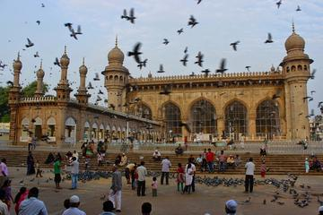

.
The Old Nawabi Jewel [Bhopal], today capital of Madhya Pradesh, brought to mind the capital of Andhra Pradesh. Nizami Hyderabad was the only Muslim state that outsized Bhopal. Both offer a rich built and culinary Nawabi heritage, and both offer glimpses of varieties of food eaten in all the corners of their respective states
Geography of Hyderabad Large manmade lake, with Hyderabad in the far distance Hussain Sagar lake, built during the reign of the Qutb Shahi dynasty, was once the source of drinking water for Hyderabad.[39] Situated in the southern part of Telangana in southeastern India,[40] Hyderabad is 1,566 kilometres (973 mi) south of Delhi, 699 kilometres (434 mi) southeast of Mumbai, and 570 kilometres (350 mi) north of Bangalore by road.[41] It lies on the banks of the Musi River, in the northern part of the Deccan Plateau.[42][43] Greater Hyderabad covers 650 km2 (250 sq mi), making it one of the largest metropolitan areas in India.[42] With an average altitude of 542 metres (1,778 ft), Hyderabad lies on predominantly sloping terrain of grey and pink granite, dotted with small hills, the highest being Banjara Hills at 672 metres (2,205 ft).[43][44] The city has numerous lakes referred to as sagar, meaning "sea". Examples include artificial lakes created by dams on the Musi, such as Hussain Sagar (built in 1562 near the city centre), Osman Sagar and Himayat Sagar.[43][45] As of 1996, the city had 140 lakes and 834 water tanks (ponds)